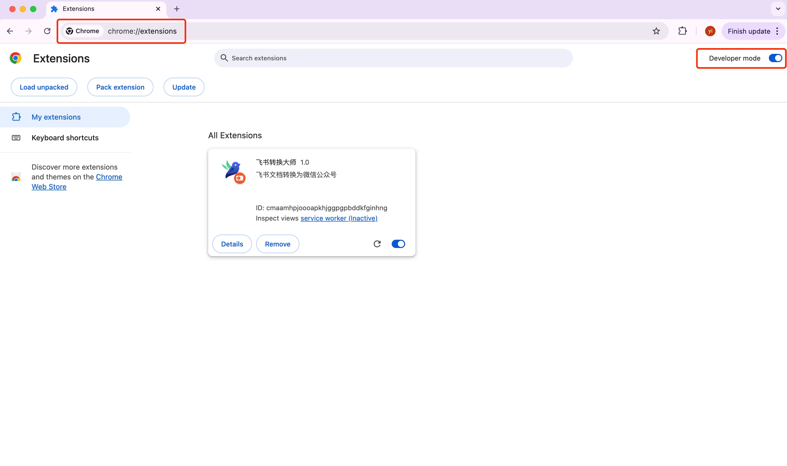
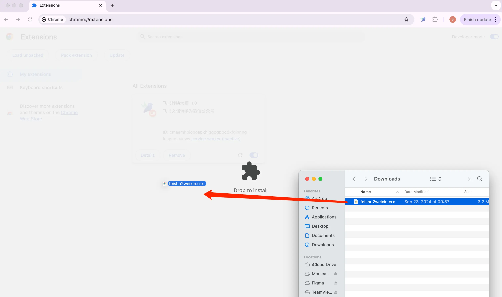
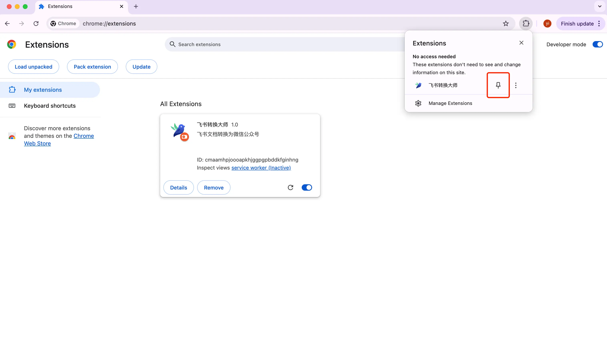
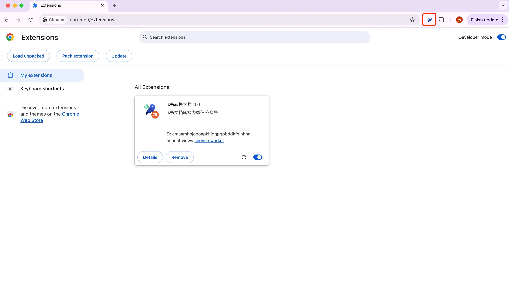

Chrome插件安装教程
注意：由于网络原因，很多用户可能无法访问 Chrome 网上应用店。本教程将指导您如何手动安装本地 CRX 插件包。
2 打开扩展程序页面，并且开启开发者模式
根据您使用的浏览器，在地址栏输入以下地址：
Chrome浏览器：
chrome://extensions/
Edge浏览器：
edge://extensions/
在扩展程序页面的右上角，找到并打开"开发者模式"开关。

3 安装插件
下载飞书转换大师 crx 安装包，并解压（下载的文件为 zip 格式，解压到本地文件夹后即可看到 crx 文件)。
- 直接将下载好的 .crx 文件拖入扩展程序页面
- 在弹出的确认框中点击"添加扩展程序"

4 将插件固定在浏览器的工具栏上
为了方便使用，可以点击书签按钮，把插件固定栏浏览器的工作栏上面

安装成功标志：
- 扩展程序列表中出现插件图标
- 浏览器工具栏显示插件图标

5 联系与支持
如果您在安装过程中遇到任何问题，可以通过以下方式获取帮助：
- 即刻 id：汐笺
- 微信 id：otaku_xijian